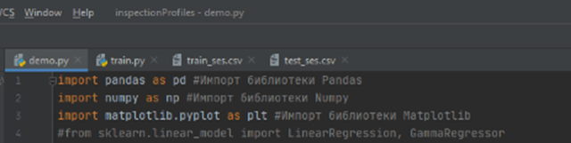
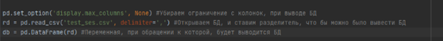
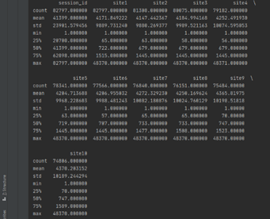
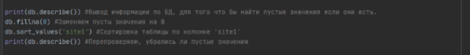
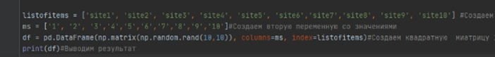
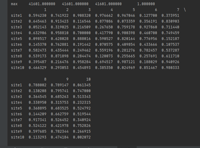
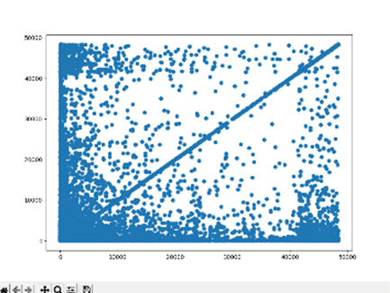

Пример содержания
1.1.Подготовка обучающей и тестовой выборок.
Для подготовки, обучающей и тестовой выборок, было выполнено следующее:
1. Импорт нужных библиотек. Таких как Pandas, Numpy, Matplotlib и Sklearn.
Библиотека Pandas нужна нам для обработки и анализа данных.
Библиотека Numpy предоставляет нам инструменты для эффективной работы с многомерными массивами и высокопроизводительные вычислительные алгоритмы.
Библиотека Matplotlib необходима нам для визуализации данных.
2. Открытие файла на чтение и создание переменной.
С помощью кода rd = pd.read_csv('test_ses.csv', delimiter=',') мы задаем переменную rd для дальнейшего анализа, которая обращается к самой базе данных. Далее с помощью кода db = pd.DataFrame(rd) задаем переменную при обращении к которой будет выводится таблица
3. Преобразование данных.
Для того чтобы сделать преобразование данных, нам нужно посмотреть статистику таблицы с помощью команды describe(). Статистика выводит нам: минимальные, средние и максимальные значения. Далее нам нужно заменить пустые значения, для того чтобы преобразовать таблицу. Я решила заменить пустые значения, потому что они дублируются. Выполняем сортировку по столбцу 'site1'.
.
1.2. Работа с разряженным форматом данных.
Необходимо создать новую матрицу, где строки будут соответствовать сессии из 10 сайтов, а столбцам – индексы сайтов. Используя код np.matrix была создана матрица с форматом 10х10
.
1.3.Визуальный анализ данных.
Для анализа данных был построен график. За его основу взято 2 признака. По графику видно, что при возрастании кривой количество точек уменьшается.
